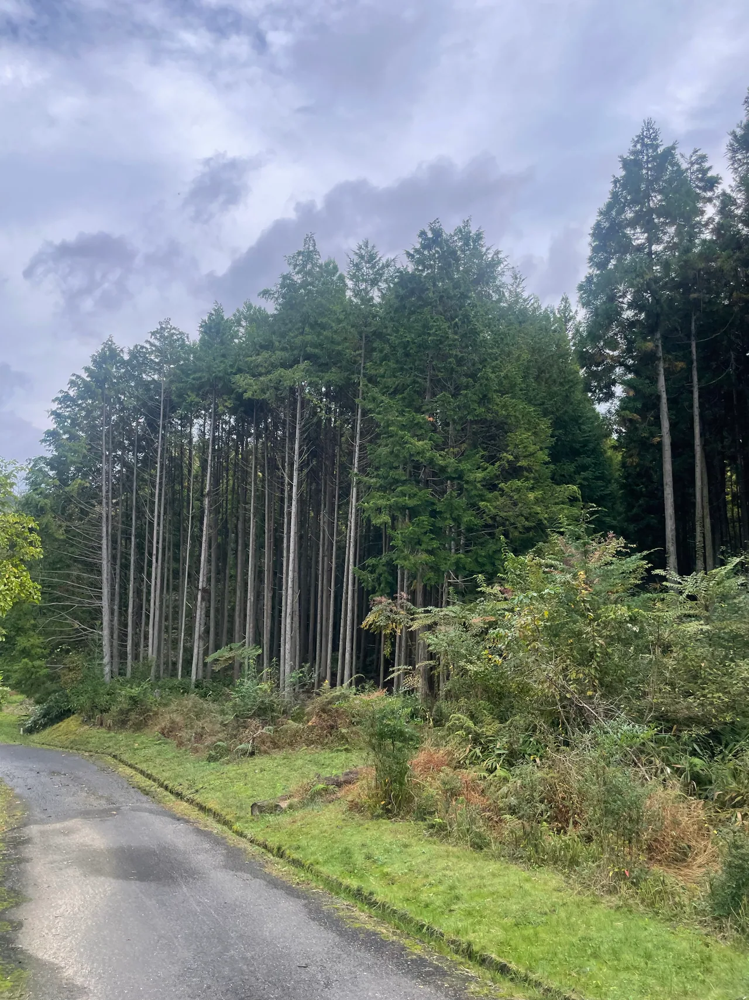

最初に、整理したい範囲、敷地の境界、残したい竹、伐採後の利用目的を確認します。本数が数えられなくても、全景と出入り口の写真、おおよその広がりをお知らせいただければ相談を始められます。

全面を切るか、必要な範囲だけ整理するか
竹林をすべてなくしたい場合と、通路や境界付近だけを整理したい場合では作業範囲が異なります。景観として残したい竹や、近くの木・植栽がある場合も最初にお知らせください。「どこからどこまで」という範囲が曖昧なまま本数だけで相談するより、写真や簡単な図で位置を共有すると、現地で確認する場所を絞りやすくなります。
境界が分からない場所は、先に整理する
隣地や道路に接する竹林では、伐採できる範囲を確認する必要があります。所有・管理の範囲が不明な竹を、写真だけを根拠に切ることはできません。境界の目印や、所有者・管理者が分かる資料があれば準備してください。法律上の判断が必要な境界問題は伐採見積と分け、関係者や専門窓口へ確認したうえで、作業する範囲を揃えましょう。
斜面と搬出経路で、片付けの条件が変わる
切った竹をどこまで運び出すか、車両をどこに停められるかも見積に関わります。斜面、段差、細い道、道路との高低差があれば写真や文章でお知らせください。伐採した竹を敷地内に残す場合も、置く場所と積み方まで相談します。単に竹を切る作業と、運び出して利用できる状態に整える作業を区別しておくと、見積後の認識違いを減らせます。
一度切った後の管理も考える
地上の竹を切ることと、地下部を含めて整備することは同じ作業ではありません。伐採後に通路として使うのか、土地を別の用途に使うのかで、相談すべき範囲が変わります。一回の伐採だけで将来の管理が不要になるとは考えず、今後の点検や再整備の方針を合わせて相談してください。費用を決める前に、今回の作業でどこまで行うかを明確にすることが大切です。
相談前に揃えたいこと
- 整理したい範囲と境界の目印
- 残す竹・残す木の有無
- 伐採材を残すか運び出すか
- 伐採後の土地の利用と管理の希望
竜樹伐採では、奈良市を中心に奈良県内の伐採をご相談いただけます。写真と市町村、希望する作業範囲をお送りください。写真による概算で分からない条件は、現地確認の要否も含めてご案内します。
現場の状態によって、対応できる方法や費用は変わります。この記事は個別の現場の診断や正式見積に代わるものではありません。